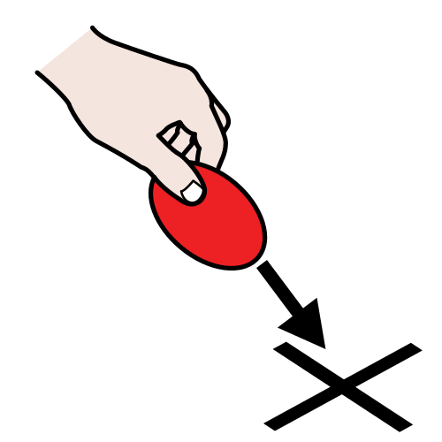

Para hacer bien una receta hay que seguir unos pasos, si no no nos saldrá bien.
Para ayudarnos, hay unas palabras que se llaman conectores temporales.
Lectura facilitada
Para saber hacer una receta hay que seguir unos pasos.
Para ayudarnos usamos los conectores temporales.
¿Quieres saber qué son?
Audio
1. Los conectores temporales
Es importante seguir bien el orden de los pasos de una receta. Hay palabras que organizan la información. Estas palabras se llaman conectores temporales.
Algunos conectores que se usan para elaborar una receta son:
Para empezar, antes de comenzar… a preparar nuestro plato.
En primer lugar, en segundo lugar, a continuación, después, luego…
Por último, para terminar.
Definición:
Poner orden. Preparar. Estructurar.
Ejemplo:
Es difícil organizar la excursión.

Definición:
Poner a alguien o a algo en un determinado sitio o momento.
Ejemplo:
Mi madre situó el pastel sobre la mesa.
Lectura facilitada
Es importante seguir el orden en los pasos de una receta.
Hay palabras que sirven para organizar la información.
Esas palabras nos indican el orden de los pasos.
Estas palabras se llaman conectores de tiempo o conectores temporales.
Los conectores temporales sirven para ordenar las partes de un texto.
Algunos conectores que se usan para elaborar una receta son:
Al comienzo: para empezar, antes de comenzar… a preparar nuestro plato.
Para explicar los pasos: en primer lugar, en segundo lugar, a continuación, después, luego…
Al finalizar: por último, para terminar.
Audio
2. Ahora ponlo en práctica
Es el turno del ejercicio individual.
Ahora que ya sabes qué son los conectores temporales, vamos a practicar.
Elige la opción con la que te sientas más cómodo-a.
¡A por todas!
Opción A: Marcando conectores
Marca en esta receta los conectores temporales para no perdernos cuando la hagamos.
Falafel
Ingredientes: (4 Personas)
Medio kilo de garbanzos o de habas secas peladas (dejar en remojo la noche anterior)
2/3 cebollas picadas
1/2 taza de perejil fresco
1/2 taza de cilantro fresco
3 dientes de ajo, picados
2 cucharaditas de comino molido
1 taza pan rallado o de harina en caso de no tener pan rallado.
1 cucharada de bicarbonato (aconsejado) o levadura en polvo
1 cucharadita de sal
1 pizca de pimienta negra
1/2 cucharadita de cayena molida (opcional)
Aceite de girasol para freír
Preparación:
Opción B: Conectando una receta
quiere preparar esta receta pero no se aclara porque está desordenada. ¿Puedes ayudarle a ordenar las partes de la receta? Para hacerlo, fíjate bien en los conectores temporales.